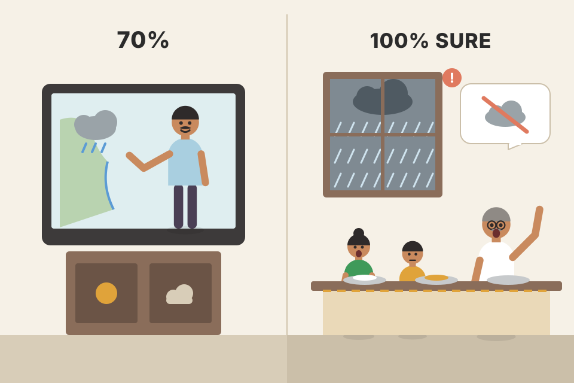
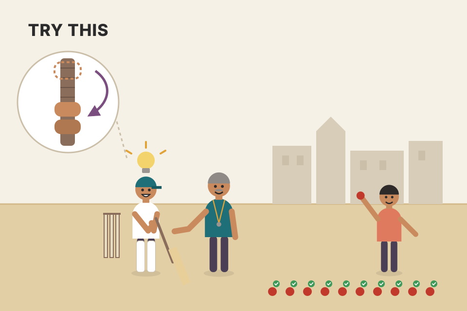
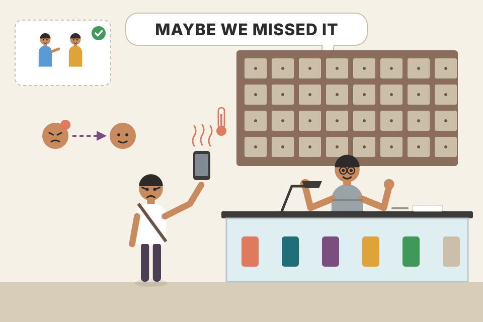
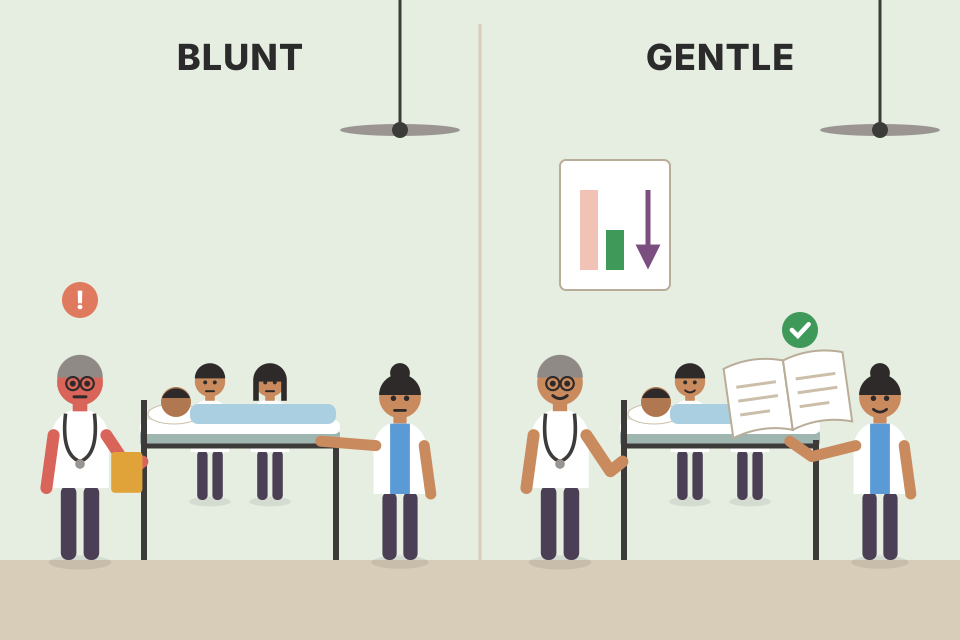
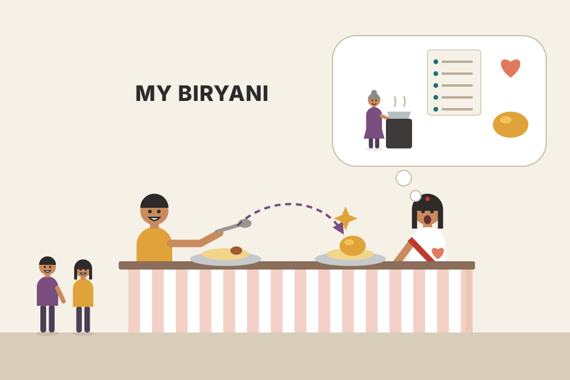
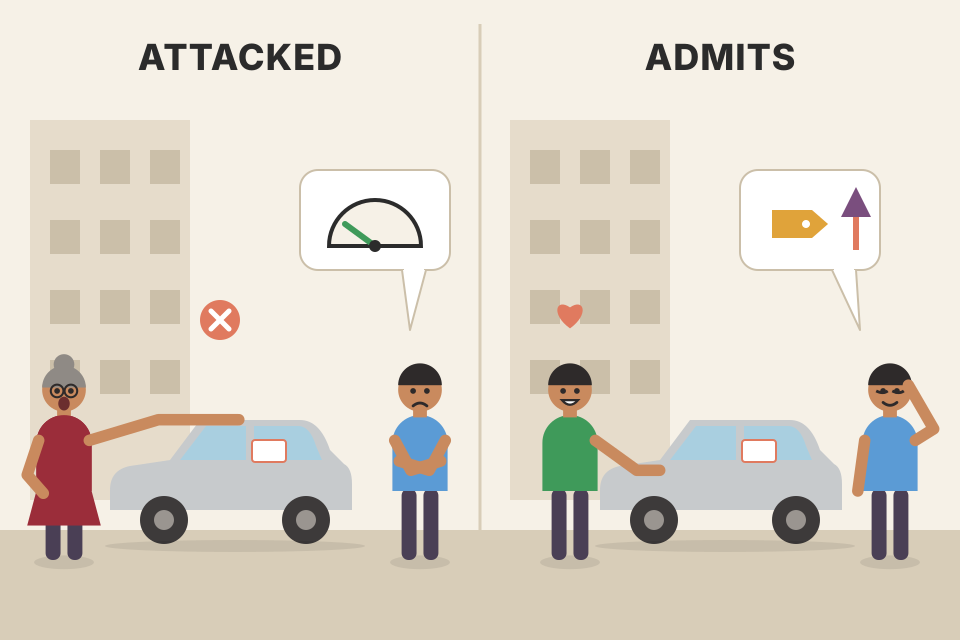
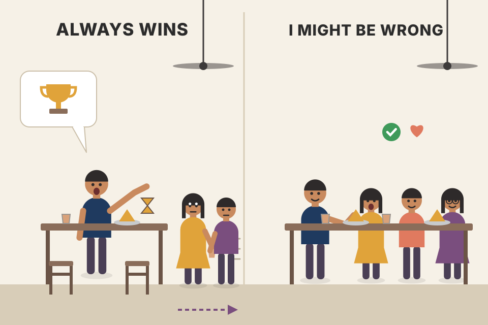
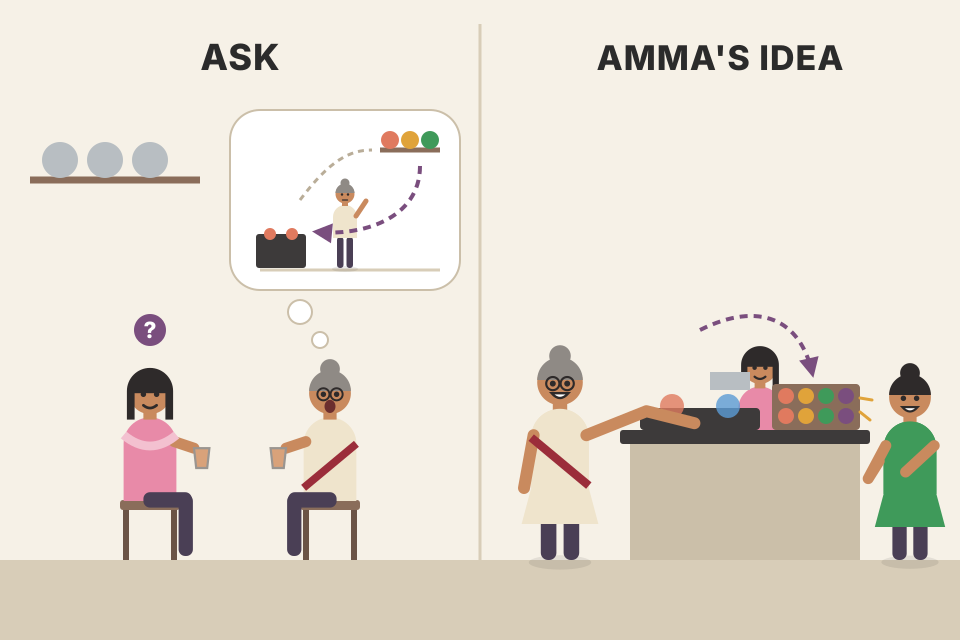
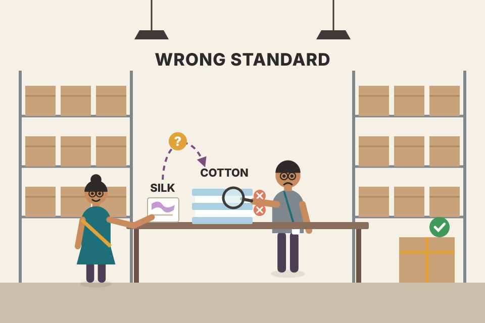
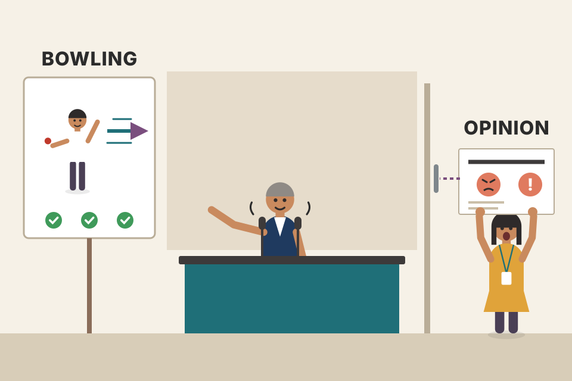

Roosevelt's ceiling: 75%Wall Street riches: 55%your record: probably lower
Telling people "you're wrong" attacks their pride, so they defend the idea harder. Show respect for their view, stay open to being wrong yourself, and let the facts do the correcting.
The previous chapter said: don't argue. This one goes one step earlier and names the line that starts most arguments: "you're wrong". Carnegie points out that even Theodore Roosevelt only hoped to be right three times out of four, so none of us has the record to correct people freely. Worse, saying it (or showing it with a look) hits the other person's intelligence and self-respect, and from then on they fight you instead of thinking about the question. The chapter gives a phrase that defuses this ("I may be wrong, let's examine the facts"), a lawyer who was right in front of the Supreme Court and still lost the room, Benjamin Franklin's rule for banning confident words, and two business people who got their way by asking questions instead of correcting.
Show respect for the other person's opinions. Never say, "You're wrong."
Where it sits. This is the second of twelve chapters in Part Three, "How to Win People to Your Way of Thinking". Ch.10 (Part Three, Ch.1) said the only way to win an argument is to avoid it. This chapter removes the trigger of most arguments: openly telling someone they are wrong. The next one, Ch.12 "If you're wrong, admit it", is the mirror image: when the mistake is yours, say so fast. Later chapters in this Part build the positive method: start friendly (Ch.13), get early "yes" answers (Ch.14), let the other person feel the idea is theirs (Ch.16).
The argument as a chain. Each row reacts to the one before it.
About the title: the "sure way of making enemies" is simply telling people they are wrong. The "how to avoid it" is the rest of the chapter.
The opening numbers. Carnegie starts with a confession from Theodore Roosevelt. While he was President, Roosevelt admitted that if he could be right 75 percent of the time, that would be the most he could hope for. Carnegie's follow-up: if one of the most admired men of the century set his ceiling there, where does that leave the rest of us?
Then a joke with a point. If you could be sure of being right even 55 percent of the time, you could go to Wall Street and make a million dollars a day. If you cannot manage even 55 percent, what entitles you to keep telling other people they are wrong?
"Wrong" without words. You do not need to say the word. A look, a tone of voice, a gesture (the raised eyebrow, the sigh, the little laugh) tells someone they are wrong just as clearly as a sentence does.
What it does to them. Does telling people they are wrong make them want to agree with you? Never, says Carnegie. You have hit them directly in four places at once:
The natural response to a blow is to hit back, not to reconsider. After that, you can throw the logic of Plato or Immanuel Kant at them and it will not move their opinion an inch, because the problem is no longer the argument. It is that you hurt their feelings.
Dated example. "A million dollars a day on Wall Street" is 1930s hyperbole. The modern version: a trader or fund that is reliably right 55% of the time on its bets is doing very well (more in "Beyond the book" below).
Roughly, yes, as long as wins and losses are about the same size. A strategy that wins 55 of 100 equal-sized bets is up 10 bets net, and repeated over thousands of trades that edge compounds. Many professional strategies run with win rates close to 50%. Carnegie's point survives: being right a little more than half the time is already rare and valuable, so most of our confident corrections are coin-flips with extra rudeness.
Set how often you are really right when you correct someone, and how many corrections you make in a week (code reviews, meetings, family chats). The numbers are modelled, not from the book.

A weather forecaster on the evening news in Chennai says "70% chance of rain tomorrow". Nobody calls him a fool when it stays dry; he never claimed certainty. Now picture an uncle at the family lunch who announces, "It will NOT rain, I'm telling you, you're all wrong." When it pours, he has lost face and will spend the evening explaining why it was not really rain.
Where it breaks: a forecast has a real, measured probability. Most of our everyday opinions do not; we just feel 100% sure. That gap between feeling sure and being right is exactly what Roosevelt's 75% is warning about.
The book's explanation: the words "you're wrong" are heard as a judgment of the person, not of the statement. A threatened person defends themselves first and thinks later, so the content of your argument never gets a hearing.
Beyond the book: research on overconfidence finds that when people say they are "99% sure" of factual answers, they are wrong far more often than 1 in 100 times. And studies of psychological reactance (Jack Brehm, 1966) show that when people feel their freedom to hold a view is being taken away, they cling to the view harder, sometimes just to reclaim the freedom.
The non-verbal "you're wrong" is everywhere in engineering: the sigh when a junior asks about a pattern in stand-up, the "...okay" in a design review, the PR comment that is just a link to the docs with no words. Each one lands on someone's intelligence and pride. Before you correct, give yourself a quick Roosevelt check: "How sure am I really, and have I checked?" Half the time you will find the code does work, just not the way you would have written it.
Interview angle. "Tell me about a time you were wrong" is easier to answer well if you already think of yourself as a 75%-at-best person. Candidates who cannot name a time they were wrong sound exactly like the people this chapter warns about.
The bad opener. Never start with "I'm going to prove such-and-such to you." Carnegie says it amounts to announcing "I'm smarter than you, and I'm about to change your mind." That is a challenge. It wakes up opposition, and the listener is ready to fight before you have made a single point.
Why make it harder? Changing someone's mind is difficult even in the best conditions. Starting with a challenge handicaps you for no reason.
The rule. If you are going to prove something, do not let anyone know you are doing it. Do it so quietly and skilfully that nobody feels they are being proved wrong. Carnegie backs this with four voices from history, each saying the same thing in a different way:
| Who | The idea (in our words) |
|---|---|
| Alexander Pope (poet) | Teach people as if you were not teaching them; present new ideas as things they had simply forgotten. |
| Galileo (over 300 years ago) | You cannot really teach anyone anything; you can only help them find it in themselves. |
| Lord Chesterfield (to his son) | Be wiser than other people if you can, but don't tell them so. |
| Socrates (to his followers in Athens) | The one thing he knew was that he knew nothing. |
"Be wiser than other people if you can; but do not tell them so."Lord Chesterfield to his son, quoted by Carnegie (pdf p130)
Carnegie on himself. He says he cannot expect to be smarter than Socrates, so he stopped telling people they were wrong, and found that it paid.
Dated wording. Pope's couplet says "Men must be taught…"; read it as "people". The idea has nothing to do with gender.

A good cricket coach at a Mumbai maidan does not walk up to a teenage batter and say "your grip is wrong, let me prove it". He says "try holding it a bit lower and play a few balls". After ten balls the boy says, "Sir, it feels easier like this", and from then on he thinks of it as his discovery. The coach "proved" his point without ever announcing it.
Where it breaks: the coach has authority and time, and the batter wants to improve. With a peer who does not see a problem, there is no "try this" moment to set up; you have to create one with questions and facts, as the later stories in this chapter do.
The book's explanation: an announced proof turns a question into a contest with a winner and a loser. Nobody volunteers to be the loser, so they fight the contest instead of looking at the evidence.
Beyond the book: people are more convinced by reasons they generate themselves. Studies on self-persuasion (Elliot Aronson's work, for example) find that arguments people produce or "discover" change attitudes more durably than the same arguments delivered to them. Galileo's line is, in modern terms, a design principle for persuasion.
The engineering version of "I'm going to prove it" is the PR comment that begins "Actually, this is wrong because…", the Slack reply that opens with a benchmark screenshot and "told you", or the design-doc section titled "Why approach B is incorrect". All of them open a contest. The quieter version gets the same facts in: "Interesting, I'd have guessed B would be slower here. Shall we benchmark both?"
Interview angle. "Tell me about a time you changed a team's mind." Interviewers listen for whether you framed it as proving people wrong or as helping the team find the answer. "I set up a quick benchmark and we looked at it together" beats "I showed them they were wrong".
Pick a message that announces a proof. Decide how you would say it, then reveal a version in the spirit of this chapter and what changed.
What to say instead. Suppose someone says something you think is wrong, or even something you know is wrong. Carnegie's suggestion is to open like this (in our words): "Well, I saw it differently, but I could be wrong. I often am. If I am, I'd like to be corrected. Let's look at the facts."
He calls this phrase real, positive magic, and insists that nobody, anywhere, will ever object to you saying "I may be wrong. Let's examine the facts."
"I may be wrong. I frequently am. Let's examine the facts."Carnegie's suggested opener (pdf p130)
The phrase has three parts, and each does a job:
| Part | What it does |
|---|---|
| "I may be wrong." | Takes away the threat. You are not claiming to be smarter, so there is nothing to defend against. |
| "I frequently am." | Shows you mean it, and makes it easy for them to be wrong too (you have gone first). |
| "Let's examine the facts." | Moves the question from people to evidence, and makes you allies looking at it together. |
Before. The car business was high-pressure, and Reinke admitted he had become hard-boiled and unfeeling when customers came in with complaints. The result: tempers flared, he lost business, and every complaint turned unpleasant.
The new opener. Seeing that this got him nowhere, he tried something different. He began greeting an upset customer with an open admission: the dealership got things wrong more often than he liked to admit, it was quite possible they had slipped up in this case too, and he wanted to hear the whole story.
What happened. He found it disarming. By the time the customer had let their feelings out, they were usually far more reasonable about settling the problem. Several customers actually thanked him for being so understanding, and two of them later brought in friends to buy new cars. In a fiercely competitive market, he told the class, that kind of customer was exactly what he needed, and respect and courtesy for every customer's opinion would help him beat the competition.
Carnegie's claim. You will never get into trouble by admitting you may be wrong. It ends the argument, and it tends to make the other person as fair, open and broad-minded as you have just been. It makes them want to admit that they may be wrong too.

A customer storms into a mobile repair shop in Lajpat Rai Market: the phone he collected yesterday is overheating again. The owner could say "Sir, we tested it, it was fine." Instead he says: "We do make mistakes, more than I'd like. Maybe we missed something. Tell me what it's doing." The customer, ready for a fight, deflates, explains calmly, and ends up recommending the shop to his cousin.
Where it breaks: the phrase only works if you are actually willing to check and fix. If "we may have erred" is followed by "but there's nothing we can do", it becomes a script, and customers spot scripts quickly.
The book's explanation: admitting you might be wrong removes the attack on the other person's pride, and people tend to match the attitude they meet. Openness invites openness. Reinke adds a second mechanism: once the customer has released their feelings, they become reasonable.
Beyond the book: this matches research on reciprocity (people return the behaviour they receive, including concessions) and on intellectual humility: studies by Mark Leary and colleagues (2017) suggest that people who acknowledge their views might be wrong are judged as more trustworthy and are better at evaluating evidence. Customer-service research has also found that a well-handled complaint can leave a customer more loyal than one who never had a problem (the "service recovery paradox", though the evidence for it is mixed).
Use the phrase where tempers start: an incident channel ("I may be wrong, but I think the spike started before the deploy. Can we look at the graph together?"), a disagreement over a root cause, a client who insists your API is returning bad data. For client escalations, Reinke's version translates directly: "We do get things wrong sometimes. It's possible we did here. Walk me through what you're seeing."
Interview angle. "Tell me about a time you handled an angry customer or stakeholder." Reinke's story is a template: you noticed your defensive approach was failing, you led with openness, you let them explain fully, and the outcome was measurable (the issue settled, the client renewed, referrals).
The question Carnegie asks. What happens if you know for certain someone is wrong and you tell them so bluntly? He answers with a story told in one of his classes by a young New York lawyer, whom the book calls only "Mr. S——".
Mr. S——'s own verdict (retold): he was right, the justice was wrong, and he had said so. Did it make the justice friendly? No. He still believed the law was on his side, and he knew he had spoken better than ever before. But he had not persuaded. His "enormous blunder" was telling a learned and famous man he was wrong.
"A hush fell on the court."Mr. S——, describing the moment to Carnegie's class (pdf p131)
Why the story matters. Every other story could be explained away ("maybe the critic was wrong"). Here the speaker was right on the law, well prepared and eloquent, and he still lost the room, because being right and persuading are two different jobs.
The book gives the case as Lustgarten v. Fleet Corporation, 280 U.S. 320. We have not added details of the case itself. In general terms, the point Mr. S—— made reflects how US admiralty (maritime) law traditionally worked: rather than a fixed statutory deadline, courts used the flexible doctrine of laches (unreasonable delay) to decide whether a claim came too late. So he was probably right, which is the whole point of the story.

A junior doctor on her first ward round at a big government hospital hears the senior consultant name the wrong dosage for a drug in front of twelve students. She says, flatly, "Sir, that's not the dose." She is right. The room goes silent, the consultant goes red, and for the rest of her posting he never asks her opinion again.
Where it breaks: with a drug dose, a patient's safety is at stake, so she must speak up (and Carnegie would agree the fact has to come out). The lesson is about how: "Sir, I may be misremembering, I'd thought the dose was lower. Shall I check the formulary?" fixes the dose without the hush.
From the book: the more learned and famous the person, the more their pride is invested in being right, and a public correction from a junior is the sharpest hit of all. Logic was on Mr. S——'s side; feelings were not.
Beyond the book: status matters here. Research on face (Erving Goffman, later Brown and Levinson's politeness theory) describes how public corrections threaten a person's "face", the image they present to others. The threat is largest when the audience is large and the corrector is lower in status, which is exactly the courtroom set-up.
The Supreme Court moment in tech: a VP says in an all-hands that "our p99 latency is 200 ms" and you know it is 800 ms. Saying "That's not right, it's 800" in front of 200 people makes you correct and makes an enemy. Options in the spirit of the chapter: ask a question that surfaces the fact ("Is that the API or the end-to-end number? I saw a higher figure on the end-to-end dashboard"), or message them privately right after with the dashboard link. The fact still gets corrected.
Interview angle. "Tell me about a time you disagreed with someone more senior." Show that you got the correct information to them, and that you chose a setting and wording that let them update without losing face.
"No, that's wrong. There's no rate limit on that endpoint."
Correct, and the meeting goes cold. The senior now has a reason to doubt your next point.
"I may be out of date on this, my understanding was that endpoint isn't rate-limited yet. Worth double-checking before we rely on it?"
Same fact, framed as your possibly-faulty memory. The senior can say "good catch" instead of "I was wrong".
Few people are logical. Carnegie is blunt about human nature: most of us are prejudiced and biased, full of ideas we formed in advance, and moved by jealousy, suspicion, fear, envy and pride. Most people do not want to change their minds about their religion, their haircut, their politics (his example is communism) or their favourite film star. So if you are tempted to tell people they are wrong, he says, read the following passage every morning before breakfast.
James Harvey Robinson, The Mind in the Making. The book quotes a long passage. Its argument, in our words:
"The little word 'my' is the most important one in human affairs."James Harvey Robinson, quoted by Carnegie (pdf p132)
Carl Rogers, On Becoming a Person. Carnegie adds the psychologist Carl Rogers (a footnote on pdf p139 says the passage is adapted from the 1961 book, pages 18 onward). Rogers's point, retold:
Dated examples. Robinson wrote in 1921: the "canals of Mars" were a popular theory then, salicin is a willow-bark compound related to aspirin, and Sargon I was an ancient Mesopotamian king. Modern equivalents: whether your city's biryani is the best, the right way to make filter coffee, or tabs versus spaces.
Think of an opinion someone holds that you think is plainly wrong (a colleague, a relative, a public figure). Before judging it, write what it might mean to them: what experience, fear or value could make it feel true? Nothing is saved.

Tell someone in Kolkata that Hyderabadi biryani is better because it has no potato, and watch what happens. The person may have barely thought about biryani rankings before; now, suddenly, they have ten reasons the potato is essential, a family history, and a view on your character. It was never about the potato. It was "my city's biryani".
Where it breaks: food loyalty is fun and harmless; the same "my" reflex around a medical belief or a security practice can do real damage. The reflex is identical, but the stakes decide how carefully you need to work around it.
From the book: Robinson says the belief is defended because it has become part of "me", and Rogers says we judge before we understand. Put together: a challenge triggers self-defence, and self-defence switches reasoning into "find arguments for what I already think".
Beyond the book: modern psychology has names for both halves. Motivated reasoning and belief perseverance (Lee Ross and colleagues showed in the 1970s that beliefs can survive even after the evidence for them is completely discredited) describe Robinson's point. The so-called "backfire effect", where correcting someone makes them believe the wrong thing more, turned out in later, larger studies to be rarer than first claimed; corrections often do work when they are not delivered as an attack. That supports Carnegie: the problem is less the fact than the blow to self-esteem that comes with it. Rogers himself later proposed a classroom rule: before you reply in a disagreement, restate the other person's view to their satisfaction.
Engineers attach "my" to tools and designs: my framework, my schema, my ticket estimate. A review comment on "my" code is heard as a comment on me. Two habits help. First, separate the person from the artefact in your wording ("this function" not "your function"). Second, try Rogers's rule in design debates: before arguing, say back their position ("So the worry is that a queue adds an operational burden we can't staff, right?") and wait for "yes, exactly". Only then give your view.
Interview angle. "How do you handle disagreements on technical direction?" Mentioning that you restate the other person's position before arguing shows real skill, and it is a concrete, believable habit, not a slogan.
The bill. Carnegie once hired an interior decorator to make draperies for his home, and when the bill arrived he was dismayed by it.
Friend one. A few days later a friend visited, saw the draperies and heard the price. She exclaimed, almost triumphantly, that it was awful and the decorator had clearly taken advantage of him. She was telling the truth, Carnegie admits. But few people like hearing truths that reflect on their judgment, so he defended himself: the best things turn out cheapest in the long run, you cannot expect quality and taste at bargain prices, and so on.
Friend two. The next day another friend came, admired the draperies with real enthusiasm, and said she wished she could afford something so lovely for her own home. This time Carnegie's reaction was the opposite. He confessed that, honestly, he could not afford them either, he had paid too much, and he was sorry he had ordered them.
The lesson. When we are wrong, we may admit it to ourselves. If we are handled gently and tactfully, we may admit it to others, and even feel proud of our honesty and open-mindedness. But not when someone is trying to force the unwelcome fact down our throat.
"Few people like to listen to truths that reflect on their judgment."Carnegie (pdf p133)
Greeley vs Lincoln. Horace Greeley, the best-known newspaper editor in America during the Civil War, disagreed fiercely with Lincoln's policies. He believed he could drive Lincoln into agreeing with him through a campaign of argument, ridicule and abuse, and he kept it up month after month, year after year. He even wrote a harsh, sarcastic, personal attack on Lincoln on the very night John Wilkes Booth shot the President.
Result. Did any of it make Lincoln agree with Greeley? Not at all. Carnegie's verdict: ridicule and abuse never do.
Greeley edited the New-York Tribune. His best-known clash with Lincoln was an 1862 open letter demanding faster action on emancipation; Lincoln answered publicly, calmly restating his own aim (saving the Union) without attacking Greeley, which is the chapter's principle in action.

Your cousin proudly shows the family the second-hand car he just bought in Pune. One aunt says "Arre, you paid two lakhs too much, the dealer fooled you." He spends the evening explaining that low mileage is worth a premium. Next week a friend says "Nice car, I wish I could get one like this", and your cousin sighs: "Honestly, I think I overpaid."
Where it breaks: sometimes the gentle friend never gets to the truth, and the cousin overpays again next time. Gentleness makes admission possible; it does not guarantee it. If the lesson matters for the future, you may need to raise it later, privately, as a question.
From the book: the same fact produced defence or confession depending only on whether it came as an attack on Carnegie's judgment. People can admit mistakes, but only when admitting does not mean losing to somebody.
Beyond the book: this is close to post-purchase rationalisation, a form of cognitive dissonance: once we have committed money to something, we look for reasons it was a good choice, especially when challenged. The second friend's admiration removed the challenge, so Carnegie no longer needed to defend the purchase and could be honest.
A teammate chose a vendor or library that has turned out badly. Saying "we wasted three months on that, I told you so" gets you the draperies defence ("it was the best option at the time"). Saying "the migration was a big effort, and you pushed it through. Looking back, would you pick it again?" often gets an honest "probably not", plus their insight into why, which is what the next decision needs. Greeley's lesson applies to sarcastic Slack threads: a long campaign of digs has never moved a tech lead's mind.
The recommendation. For good advice on dealing with people and managing yourself, Carnegie points to Benjamin Franklin's autobiography, which he calls one of the most fascinating life stories ever written and a classic of American literature. In it Franklin describes how he cured himself of the bad habit of arguing and became one of the most capable and diplomatic people in American history.
The rebuke. When Franklin was a clumsy young man, an old Quaker friend took him aside and gave him some painful truths. The gist: your opinions slap everyone who disagrees with you, so people have stopped listening to them; your friends have more fun when you are absent; and because you act as if nobody can teach you anything, nobody bothers to try, which means you will never learn more than the little you know now.
How he took it. What Carnegie admires most is that Franklin accepted this sting. He was big enough and wise enough to see it was true and that he was heading for failure and social disaster. He turned around and immediately began to change his arrogant, opinionated ways.
Franklin's rules for himself (from his own account, summarised):
| Franklin dropped | Franklin used | A modern version |
|---|---|---|
| "certainly" | "I conceive…" | "My understanding is…" |
| "undoubtedly" | "I apprehend…" | "I suspect…" |
| flat contradiction | "I imagine it to be so" | "I'd guess…" |
| "that's absurd" | "it appears to me at present" | "From what I've seen so far…" |
| "you're wrong" | "in certain cases you'd be right, but here there seems some difference" | "That's true for X; I wonder if this case is different because…" |
What happened, by Franklin's account:
"I was but a bad speaker, never eloquent… and yet I generally carried my points."Benjamin Franklin, Autobiography, quoted by Carnegie (pdf p135)
Type or paste a message you are about to send (a PR comment, a Slack reply, an email). The filter marks the words Franklin would have banned and suggests a tentative swap. It runs only in your browser.

A school debate champion from Chandigarh goes to college and keeps "winning" every hostel discussion: on films, on cricket selections, on politics. By second year, people quietly stop inviting him to the canteen. A senior finally tells him: "Nobody argues with you any more because it's tiring, not because you're right." He starts saying "I might be wrong, but…" and "fair point, in some cases". Within a term he is the person people come to for advice.
Where it breaks: Franklin's change took years and he called it a struggle against his nature. A few softening words added to an unchanged attitude ("I might be wrong, but you're an idiot") fool nobody. The words are the training wheels; the real change is actually holding opinions more loosely.
From Franklin's account: tentative wording leaves the listener room to agree without losing, so ideas are judged on merit. It also protects the speaker: if you said "it seems to me", being wrong costs you little.
Beyond the book: Silicon Valley's version is the motto "strong opinions, weakly held" (attributed to the forecaster Paul Saffo): form a clear view, but signal that you will change it when the evidence changes. Some research on hedging finds it can make speakers seem less confident or less competent in certain settings, so the skill is to hedge your certainty, not your clarity: state the idea plainly and the confidence honestly.
Teams have their young Franklins: the brilliant engineer whose every review comment says "obviously", "clearly" or "just" ("just use a map"). Everyone stops asking them for input, and, as the Quaker friend predicted, they stop learning, because nobody bothers to tell them anything. The Franklin filter for code reviews: replace "this is wrong" with "I think this might break when…", and "obviously" with nothing at all. Many teams also mark comments as "nit:" or "question:" for the same reason.
Interview angle. "What feedback have you received that changed how you work?" A Franklin-style answer is strong: someone told you your style shut people down, you accepted it, you changed specific words and habits, and you can describe the result (more input from juniors, proposals accepted faster).
Carnegie asks how Franklin's methods work in business, and gives two cases. The first is a before-and-after from one person.
The problem. Part of her job was designing and maintaining the incentive systems and production standards that let operators earn more by producing more yarn. The existing system had worked when the plant ran only two or three kinds of yarn. But the plant had expanded to more than twelve varieties, and the old system no longer paid operators fairly for the work or gave them a reason to produce more. She designed a new one that paid each operator according to the class of yarn she was running at any given time.
Meeting one: proving them wrong. She walked into a meeting with management determined to prove her system was right. She told them in detail where they were wrong and unfair, and that she had all the answers they needed. It failed completely. She had been so busy defending her new system that she had given them no graceful way to admit the old one had problems. The idea was dead.
Meeting two: asking. After a few sessions of Carnegie's course she saw her mistake and called another meeting. This time she asked them where they felt the problems were. They discussed each point, and she asked for their opinions on the best way forward. With a few low-key suggestions at the right moments, she let them develop her system themselves. When, at the end, she actually presented her system, they accepted it enthusiastically.
Her conclusion (retold): nothing good comes from telling a person outright that they are wrong, and a lot of damage can. It strips them of their dignity and makes you an unwelcome part of any discussion.
"I let them develop my system themselves."Katherine Allred, as quoted by Carnegie (pdf p135)
Dated wording. The book refers to every operator as "she" (the yarn-plant workforce of the time), and Allred speaks of "he or she" being told they are wrong. Today's equivalent is simply "operators" and "people".

A newly married daughter-in-law in a joint family in Lucknow wants to reorganise the kitchen so that cooking for twelve is faster. If she announces at dinner "the way this kitchen is set up is all wrong, here's my plan", her mother-in-law will defend every shelf. If she instead asks over tea, "Amma, what slows you down most in the mornings?", listens, and nudges ("what if the masalas were next to the stove?"), within a week Amma is proudly showing guests "her" new layout, which happens to be the daughter-in-law's plan.
Where it breaks: in the family, the daughter-in-law may never get credit, and she has to be fine with that. Allred also gave up the satisfaction of "my idea won" in exchange for the idea actually being used. If credit matters to your career, you may need a manager who notices who shaped the outcome.
From the book: in meeting one, accepting her system meant management confessing they had been unfair, in front of her. In meeting two, they diagnosed the problems themselves, so fixing them was their own good judgment, not an admission. Her dignity point is the core: telling people they are wrong strips their dignity, and people defend their dignity before anything else.
Beyond the book: people value what they helped create. Michael Norton, Daniel Mochon and Dan Ariely called this the IKEA effect (2012): people valued furniture they had assembled themselves well above identical pre-assembled pieces. A plan you helped design is "my" plan, and Robinson's "my" now works for the idea instead of against it.
This is how good RFCs and architecture changes actually land. Meeting one is the 20-page design doc dropped on the team with a section on "problems with the current approach". Meeting two is a short session that asks "what hurts most about the current deploy pipeline?", writes their answers on the board, and asks what a fix would need to do. Your design then arrives as the obvious answer to their list. You lose some authorship and gain an adopted design.
Interview angle. "Tell me about a time you proposed a change that was initially rejected." Allred's story is the perfect structure: what you did first and why it failed (you made it about them being wrong), what you learned, what you did differently, and the result. Admitting the first failure makes the answer more credible, not less.
"Our on-call rotation is unfair and it's burning people out. I've designed a better one. Here's why the current one is wrong."
The managers who designed the current rotation now have to defend it.
"I'd like to understand where on-call is hurting. What are the worst parts of the current setup for you? … If we could change one thing, what would help most? … What if pages after midnight went to a follow-the-sun team?"
The problems are named by them; the fix grows out of their list.
Carnegie stresses that these cases are typical of the experiences of thousands of people. The second is a salesman who won every argument and lost money on each one. (This Crowley is a lumber salesman, not the gunman "Two Gun" Crowley from Ch.1.)
The habit. For years Crowley had told tough lumber inspectors they were wrong, and he usually won the argument. It did no good. Inspectors, he said, are like baseball umpires: once they make a call, they never reverse it. He realised his firm was losing thousands of dollars through the arguments he won, so during the course he decided to stop arguing.
The moves, listed. What Crowley did, in order, is a reusable method:
The result. The inspector re-inspected the whole carload after Crowley left, accepted all of it, and the firm was paid in full. Crowley's summary: a little tact and the decision not to tell the other man he was wrong saved his company a substantial sum, and the goodwill saved was worth more than could be measured in money.
"These lumber inspectors are like baseball umpires."R. V. Crowley, quoted by Carnegie (pdf p136)

A textile exporter in Tiruppur gets a call: the buyer's quality inspector in the warehouse has rejected a shipment of cotton shirts, saying 40% have stitching defects. The exporter flies in, but instead of quoting the contract's quality standard, she asks to watch the inspection. She sees he is applying the standard for premium silk garments, and asks, "Can you show me what you're looking for on this one, so our next batch is perfect for you?" An hour later he says, half to himself, "Maybe we should have ordered the higher grade." The shipment is accepted.
Where it breaks: this works when you really are right on the facts and the other side can save face by "discovering" it. If your shipment really is defective, all the tact in the world just delays the moment you need to admit it (see Ch.12).
From the story: the inspector was hostile and ready to fight. Crowley gave him nothing to fight against: no contradiction, constant agreement on the principle (reject unsuitable wood), and questions that made the inspector look at each board again with his own eyes. Once it was safe to be inexperienced, he admitted it and began learning. The umpire changed his call because nobody demanded he change it.
Beyond the book: this is a textbook case of what negotiation researchers call focusing on interests, not positions (Fisher and Ury's Getting to Yes, 1981). The position was "reject the wood"; the interest was "get lumber that suits our use". By serving the interest openly, Crowley made the position unnecessary.
The engineering lumber car: a customer's QA team rejects your release, saying 30% of their test cases fail. You suspect they are testing against an old API version. The argument route ("your tests are wrong, read the changelog") wins the point and loses the renewal. The Crowley route: join a call, ask them to run the failing cases while you watch, ask what each test is checking "so the next release fits you exactly", and let them notice the version mismatch. The same works internally when another team's security review blocks your launch on what you think is a misread policy.
Interview angle. "Tell me about a time you resolved a conflict with an external partner or customer." Structure it like Crowley: the stakes (money, deadline), your old reflex and why you dropped it, the questions you asked, and the concrete outcome (accepted, paid, renewed).
Carnegie closes with four short pieces of wisdom, from the twentieth century back to ancient Egypt, each showing respect for views and people you might easily reject.
"I judge people by their own principles—not by my own."Martin Luther King Jr., quoted by Carnegie (pdf p138)
Nothing new. Carnegie says openly that he is not revealing anything original in this chapter; the advice is thousands of years old. In plain terms: don't argue with your customer, your spouse or your opponent. Don't tell them they are wrong, don't stir them up. Use a little diplomacy.
Show respect for the other person's opinions. Never say, "You're wrong."
The footnote. The chapter ends (pdf p139) with a single footnote crediting the Carl Rogers passage from plate 5 to On Becoming a Person (Houghton Mifflin, 1961), pages 18 onward.
Dated wording. The book's "the nation's highest-ranking black officer" is 1970s/80s phrasing; today we would write "the highest-ranking Black officer in the US military". Lee and Jefferson Davis led the Confederacy, which fought to preserve slavery; Carnegie uses Lee only for this anecdote about fairness, and the anecdote does not soften that history.

A selector for a Ranji Trophy team is asked about a fast bowler who has publicly criticised him in the press. He says: "Best death bowler in the state, he deserves the call-up." A journalist asks, "Don't you know what he's been saying about you?" The selector shrugs: "You asked about his bowling, not his opinion of me." That is Lee's answer, in whites.
Where it breaks: judging someone fairly on the question asked does not mean ignoring real harm. If the bowler's attacks were damaging the team, that would be a separate question to deal with directly. Lee's point is that one should not leak into the other.
From the book: King and Lee both separate the question being asked from their personal feelings. King respects that James lives by a code different from his own; Lee refuses to let a grudge distort his judgment. Both are respect for the other person's opinions in action, and both make their own judgment more trusted.
Beyond the book: this resembles what psychologists call separating the person from the problem and, in hiring and performance reviews, guarding against the halo and horns effects, where one strong feeling about a person colours every judgment about them.
Two everyday forms. In a performance calibration, give an honest, strong rating to the engineer who argues with you in every design review, if their work deserves it (Lee). In a design discussion, judge a proposal by the goals its author is optimising for (cost, simplicity, time to ship), not by yours alone, before you say what you would change (King). And the closing line applies directly: with customers, with your partner at home, with the team you are negotiating against, "don't tell them they are wrong" is not weakness; it is the fastest route to the outcome.
Interview angle. "Tell me about working with someone you didn't get along with." Lee's answer is the model: you kept the professional judgment separate from the personal friction, and said so.
A teammate posts: "We should rewrite the billing service in Go. Python is too slow for this."
"That's wrong. Our bottleneck is the database, not Python. A rewrite would be a waste of a quarter."
Probably correct. Now they will defend the rewrite and quote benchmarks.
"Speed on billing matters, agreed. I may be wrong, but my guess was that most of the time goes to DB queries. Shall we profile one slow request together before we decide?"
Agrees with their goal, states your view as a guess, and lets the profile do the correcting.
Show respect for the other person's opinions. Never say, "You're wrong."
| Term or phrase | Meaning on this page | Where |
|---|---|---|
| Principle 2 (Part Three) | Show respect for the other person's opinions. Never say, "You're wrong." | pdf p138 |
| Roosevelt's 75% | Even a great leader's ceiling for being right; a reason for humility. | pdf p129 |
| Four targets | "You're wrong" hits intelligence, judgment, pride and self-respect. | pdf p129 |
| "I'll prove it to you" | An opener that turns a question into a contest. | pdf p129 |
| "I may be wrong. Let's examine the facts." | The disarming opener; moves the talk from people to evidence. | pdf p130 |
| The little word "my" | Robinson: we defend beliefs as part of ourselves, not for their merit. | pdf p132 |
| Evaluate vs understand | Rogers: we judge statements before grasping what they mean to the speaker. | pdf p132 |
| Franklin's banned words | "Certainly", "undoubtedly" and other fixed-opinion words, replaced by tentative ones. | pdf p134 |
| Let them develop it | Allred: guide with questions so the other side builds your idea. | pdf p135 |
| Inspectors are umpires | Crowley: once someone has made a call, contradicting it only locks it in. | pdf p136 |
| Judge by their principles | King: assess people by their own code, not yours. | pdf p138 |
Small exercises, each with a way to tell whether it worked. The exercises are ours; the ideas behind them are the chapter's.
The book's own caveats first.
Try to answer before opening each one. The first half is story recall; the second half is using the principle.
Theodore Roosevelt said that being right 75% of the time was the highest he could hope for as President. Carnegie adds that anyone who could be sure of being right 55% of the time could make a fortune on Wall Street. So if you can't be sure of 55%, you have little ground to tell others they are wrong.
Intelligence, judgment, pride and self-respect. The person wants to strike back rather than change their mind; because their feelings are hurt, even the logic of Plato or Kant won't change their opinion.
It amounts to saying "I'm smarter than you and I'll make you change your mind". It is a challenge that arouses opposition before you begin, making an already hard task harder. Prove things so subtly that nobody feels it.
Pope (teach as if you weren't, present new things as forgotten ones), Galileo (you can only help people find it in themselves), Lord Chesterfield (be wiser than others but don't tell them), Socrates (the only thing I know is that I know nothing).
The Dodge dealer in Billings, Montana stopped being hard-boiled with complaints and began by admitting the dealership often made mistakes and might have erred with this customer, then asked to hear about it. Customers became more reasonable, several thanked him, and two brought in friends who bought new cars.
Asked whether the admiralty statute of limitations was six years, he bluntly said there was none. The court fell silent and the room went cold. He was right and spoke brilliantly, but did not persuade; he had told a learned, famous man he was wrong.
We defend beliefs not because we love the ideas but because they are ours and our self-esteem is threatened. "My" carries the same force for my dinner, my dog, my country or my God, so most "reasoning" is finding arguments to keep believing what we already believe.
The first said he had been cheated, which attacked his judgment, so he defended the purchase. The second admired them, so there was nothing to defend and he admitted he had paid too much. Handled gently, people can admit mistakes; forced, they won't.
No direct contradiction and no positive assertion; no fixed-opinion words like "certainly" or "undoubtedly"; tentative phrases like "I conceive" or "it appears to me at present"; and granting that the other view would be right in some cases. Conversations grew pleasanter, his ideas were received more readily, being wrong cost him less, and despite being a poor speaker he carried his points in public life for fifty years.
In the first she told management in detail how they were wrong and unfair; she left them no graceful way to admit the old system's problems, and the idea died. In the second she asked where they saw problems, discussed each point, asked their opinions, made a few low-key suggestions, and let them develop her system. They accepted it enthusiastically.
He let them keep unloading, watched, asked friendly questions about why pieces were rejected "so future shipments fit", kept agreeing they were right to reject unsuitable wood, and dropped occasional careful remarks. The hardwood-trained inspector admitted he lacked white-pine experience, realised they had ordered too low a grade, re-inspected everything and accepted it; the firm was paid in full.
That the president had asked for Lee's opinion of the officer, not the officer's opinion of Lee. He kept his judgment of the man's merit separate from personal feeling.
Privately in the PR, about the code not the person, as a question with the facts: "I may be wrong, but I think two requests could both miss the cache here and write at once. Could we add a test with two concurrent calls to check?" The fact is clear; the test settles it, not your authority.
Avoid the Mr. S—— move. If the client will act on it, ask a gentle clarifying question ("Is that the figure from last quarter's report? I think the newer one may be a bit different"). Otherwise message your manager privately at once with the source so they can correct it themselves.
Show the Allred pattern: you first asked about their problems and goals, stated your view tentatively, let data or a quick experiment do the proving, and the team ended up owning the decision. If you first tried the "prove them wrong" route and it failed, saying so makes the story stronger.